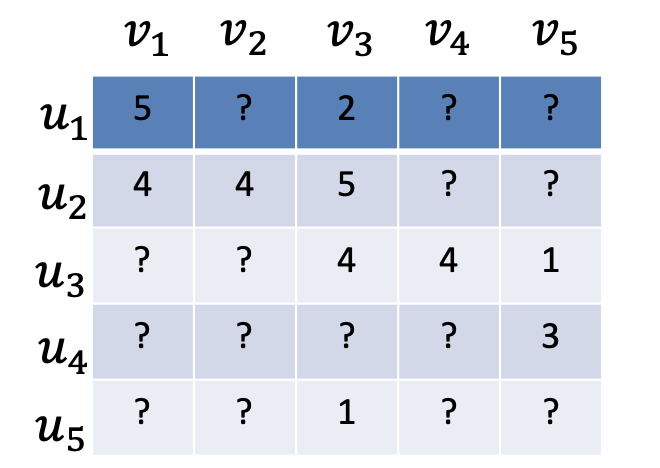
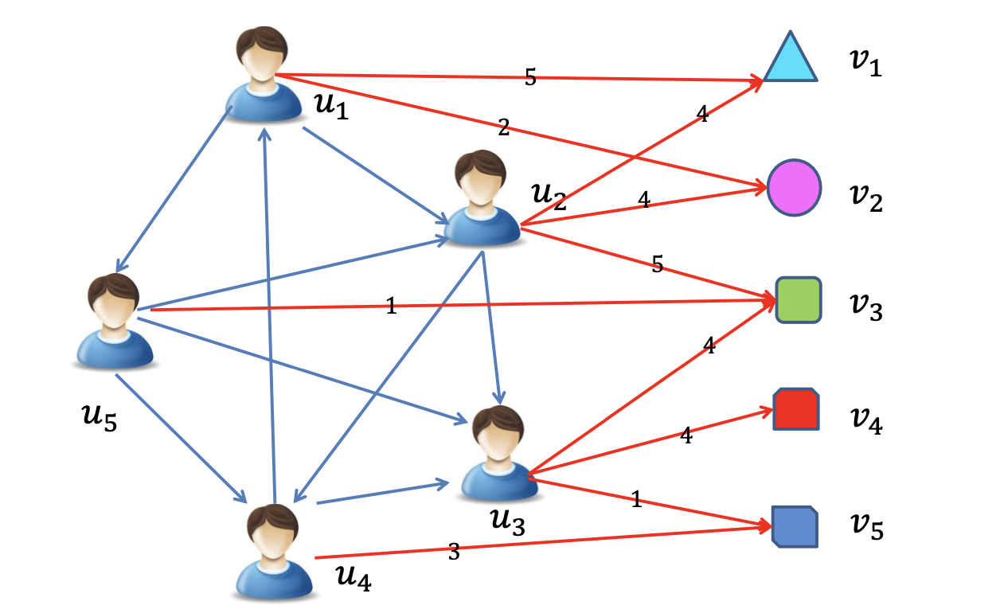

In a world where information is everywhere and everything is getting digitized, it becomes increasingly difficult for users to find relevant content. Recommender systems try to solve this issue by filtering the irrelevant contents, showing only items of potential interest to the user.
This paper provides an overview of the three main types of recommender systems, namely content-based, collaborative-filtering based and hybrid recommender systems, discussing their strengths and weaknesses. Additionally the incorporation of social networks in recommender systems is being elaborated, since traditional recommendation mechanisms tend to neglect social connections between users, which could significantly increase the accuracy of a recommendation system. Therefore, the paper elaborates the Random Walk with Restarts algorithm, which improves the recommendation performance of a system by leveraging social interactions. The algorithm’s ability to frequently return to the starting node gives us the ability to calculate the proximity of other nodes surrounding the starting node. This enables recommendations which are more aligned to the user’s social surrounding.
A case study conducted by researchers from the University of Glasgow, demonstrates the practical application of the RWR algorithm adding real world relevance to the discussion.
Introduction
We are living in a highly connected world where everything is being digitized and the information overload has become an increasing issue for online users. Recommender systems try to tackle this problem of information overload by filtering out the irrelevant results and only showing the results which are of potential interest to the current user. Such systems are already in use in various domains, including product recommendation on Amazon and movie recommendation on Netflix.
Several different techniques are used to build recommender systems, but they can generally be classified into three main groups: Content-based recommender systems, collaborative filtering based recommender systems and hybrid recommender systems. ( Citation: 2013 Tang, J., Hu, X. & Liu, H. (2013). Social recommendation: a review. Social Network Analysis and Mining, 3. 1113–1133. )
Traditional recommender systems assume that users are independent and identically distributed. However, with the rise of social media this approach has been outdated since now online users can be inherently connected via various types of relationships such as friendships, followings and many more. Online social relationships allow users to share information and ideas with their friends and followers.
The homophily principle ( Citation: 2001 McPherson, M., Smith-Lovin, L. & Cook, J. (2001). Birds of a feather: Homophily in social networks. Annual review of sociology, 27(1). 415–444. ) states that people’s social networks are homogeneous and a user’s preference is also similar to or influenced by the social network he or she is in. Therefore it is of substantial interest to elaborate on personalization based on social networks, since using them we have the ability to also map the interdependence of users inside a social network.
Social networks in this paper are not to be mistaken for social media platforms such as Instagram or Facebook, but can be referred to as a set of nodes, typically representing users, and edges connecting the nodes, typically representing a friendship or frequency between the nodes.
In this seminar paper we are going to first take a look at the three main recommender systems, in this chapter we will also elaborate the metrics which are being used to implement each of the systems. After that we are going to take a look at algorithms and techniques, in particular at the Random Walk with Restarts algorithm which can also be used to improve the performance of an recommendation system. Furthermore we will also take a look at a real world case study ( Citation: Konstas, Stathopoulos & al., 2009 Konstas, I., Stathopoulos, V. & Jose, J. (2009). On social networks and collaborative recommendation. ) where the Random Walk with Restarts algorithm has been implemented on a dataset from the last.fm site and it has been compared to the standard Collaborative Filtering method.
Recommender Systems
Recommender systems are usually built up of two sets, a set of users and a set of items. A user has the ability to rate a subset of items with a rating. By doing so, we can denote a rating matrix, where every entry of the matrix represents the rating given for a certain item by a user. If the user has not rated a particular item, the adequate entry will be set to ‘?’. The task of the recommender system is to predict the rating a particular user would have given on a not yet rated item. By doing so it can elaborate what items might also be interesting to the particular user, hence it proceeds to recommend them to the user.
Many recommender systems have already been proposed and they can generally be grouped into three main groups: Content-based recommender systems, collaborative filtering based recommender systems and hybrid recommender systems. ( Citation: Tang, Hu & al., 2013 Tang, J., Hu, X. & Liu, H. (2013). Social recommendation: a review. Social Network Analysis and Mining, 3. 1113–1133. )
In this section we are going to delve into the three main kinds of recommender systems and elaborate their main characteristics as well as the metrics associated with them.
 Figure 1: An example for a user-item matrix.
Content Based Recommender Systems
Content based recommender systems recommend items similar to the ones that the user already preferred at some time in the past. This type of recommender system is usually associated with the recommendation of items with textual information, such as news, books and documents. ( Citation: Sun, Han & al., 2015 Sun, Z., Han, L., Huang, W., Wang, X., Zeng, X., Wang, M. & Yan, H. (2015). Recommender systems based on social networks. Journal of Systems and Software, 99. 109–119. )
The content is described using keywords and the informativeness of a keyword is being measured with the term frequency (TF) - inverse document frequency (IDF) weight. The TF weight of a keyword is the frequency of the given keyword in a document and the IDF weight of a keyword is the ratio of documents that include that specific term. ( Citation: Liu, Sheng & al., 2018 Liu, C., Sheng, Y., Wei, Z. & Yang, Y. (2018). Research of text classification based on improved TF-IDF algorithm. IEEE. )
Content based recommender systems also bring along several limitations to them, with the so called "cold-start" ( Citation: Tang, Hu & al., 2013 Tang, J., Hu, X. & Liu, H. (2013). Social recommendation: a review. Social Network Analysis and Mining, 3. 1113–1133. ) problem being one of them, where the system has issues to recommend items to a completely new user since it cannot reference any previous ratings by the user, hence the system then fails to recommend items to users with few or no ratings.
Collaborative Filtering Based Recommender Systems
Collaborative filtering, being one of the most popular techniques for building recommender systems, has the ability to predict interests of a particular user based on the assumption that if a pair of users has agreed on some ratings in the past, they are also going to agree with each other in the future. A similarity between the users is being calculated and based on that future ratings will be predicted.
Collaborative filtering methods can be categorized into memory based and model based collaborative filtering. In the following two sections we are going to take a deeper look into each of them.
Memory based collaborative filtering
Memory based filtering makes use of the user-item matrix to generate a prediction. It can further be divided into two more subgroups, namely user-oriented and item-oriented methods. User oriented methods make predictions based on the ratings a similar user, to the one that the prediction is being made for, has given for an item. Item oriented methods on the other hand side make predictions based on the ratings of similar items made by the same user. The main challenges with memory based methods is to compute the similarity and aggregate the ratings. ( Citation: Sun, Han & al., 2015 Sun, Z., Han, L., Huang, W., Wang, X., Zeng, X., Wang, M. & Yan, H. (2015). Recommender systems based on social networks. Journal of Systems and Software, 99. 109–119. ) The good thing here is that the metrics used for calculating the similarity are very similar for both user and item based methods. One of the most widely used techniques for tackling the problem of computing the similarity between two users or items is the Pearson Correlation Coefficient. ( Citation: Tang, Hu & al., 2013 Tang, J., Hu, X. & Liu, H. (2013). Social recommendation: a review. Social Network Analysis and Mining, 3. 1113–1133. )
The Pearson correlation coefficient between two users \(u\) and \(v\) is calculated as follows:
\(\text{Pearson}(u, v) = \frac{\sum_{i \in I_{uv}} (r_{u,i} - \bar{r}_u)(r_{v,i} - \bar{r}_v)}{\sqrt{\sum_{i \in I_{uv}} (r_{u,i} - \bar{r}_u)^2} \sqrt{\sum_{i \in I_{uv}} (r_{v,i} - \bar{r}_v)^2}}\)
where \(r_{u,i}\) is the rating given by user \(u\) to item \(i\), \(r_{v,i}\) is the rating given by user \(v\) to item \(i\), \({r}_u\) is the average rating of user \(u\), \({r}_v\) is the average rating of user \(v\), and \(I_{uv}\) is the set of items rated by both users \(u\) and \(v\).
After computing the correlation score, we can predict the missing ratings by aggregating the ratings of the k-nearest neighbours of the user or item we want to recommend to. ( Citation: Konstas, Stathopoulos & al., 2009 Konstas, I., Stathopoulos, V. & Jose, J. (2009). On social networks and collaborative recommendation. )
Model based collaborative filtering
Model-based filtering systems operate on the principle that users form clusters according to their similar rating behaviors. These systems assume a model to identify patterns in user rating behaviors through techniques such as clustering, Bayesian networks, and other machine learning methods. However, model-based approaches face challenges, including the need to fine-tune multiple parameters and the potential for models to perform poorly when applied to significantly different contexts.
Hybrid Recommender Systems
In order to avoid certain limitations of the previously explained recommendation systems, hybrid recommender systems are introduced to combine content and collaborative filtering (CF) methods, which can be classified into three main categories ( Citation: Tang, Hu & al., 2013 Tang, J., Hu, X. & Liu, H. (2013). Social recommendation: a review. Social Network Analysis and Mining, 3. 1113–1133. ) :
-
Combining different recommenders, where content and CF methods are implemented separately and then their predictions are combined to obtain the final recommendation.
-
Adding content based characteristics to CF models.
-
Adding CF based based characteristics to content based models.
Algorithms and techniques
In this section we are going to explore the Random walk with Restarts algorithm which has the ability to significantly enhance the overall performance of a recommender system, by incorporating the social interactions amongst users in a system. The algorithm is particularly useful for social networks since we can determine the proximity of Nodes in a Graph with it.
The RWR algorithm models the recommendation problem as a random walk over a graph where nodes represent both users and items, and edges represent interactions, such as ratings, friendships, or other types of social connections. The walker randomly makes a step visiting one of its neighbors and increasing the count. After every step there is a certain probability alpha with which the walker might restart at the query nodes (Q). After the random walk has completed, the nodes with the highest count also have the highest proximity to the query node. ( Citation: Liu, Sheng & al., 2018 Liu, C., Sheng, Y., Wei, Z. & Yang, Y. (2018). Research of text classification based on improved TF-IDF algorithm. IEEE. )
Since traditional recommender systems lack the incorporation of social interactions, RWR can better capture the influence of a user’s social surrounding on their preferences. As already mentioned, people tend to turn to their friends for recommendations and therefore decide similarly to them. This approach aligns with the homophily principle, which suggests that users with social ties often share similar preferences. ( Citation: Sun, Han & al., 2015 Sun, Z., Han, L., Huang, W., Wang, X., Zeng, X., Wang, M. & Yan, H. (2015). Recommender systems based on social networks. Journal of Systems and Software, 99. 109–119. )
 Figure 2: An example for a social network displaying user’s and items.
Algorithm Steps
The steps of the RWR algorithm in the context of a social network-based recommender system are as follows ( Citation: Konstas, Stathopoulos & al., 2009 Konstas, I., Stathopoulos, V. & Jose, J. (2009). On social networks and collaborative recommendation. ) :
-
Graph Construction: Create a graph where nodes represent both users and items. Edges represent interactions such as user ratings of items and social connections between users.
-
Initialization: Starting from any node \(x\) in the graph, randomly follow a link to another node in each step.
-
Random Walk with Restart: In every step there is a probability \(a\) that the walker will return to position \(x\) in the next step. Initialize the probability vector \(p^t\) and the column vector \(q\), which represents the starting node with a value of 1 and all other values resulting in 0. Furthermore we should also introduce the column-normalized adjacency matrix \(S\), where every entry of the matrix shows the probability of a certain entry \(j\) being the next state with a given state of \(i\)
-
Iteratively update the probability vector using the following formula until convergence:
$$\mathbf{p}^{t+1} = (1 - a) \mathbf{S} \mathbf{p}^t + a \mathbf{q}$$where \(S\) is the transition matrix of the graph and \(p\) is the restart probability
-
Recommendation: Rank the items based on the final probability vector \(p\).
Determining Proximity of Nodes
The RWR algorithm is particularly useful in social networks because it can determine the proximity of nodes in a graph. By performing a random walk that restarts at the starting node, the algorithm effectively measures the connectivity and proximity of other nodes relative to the starting node. This process ensures that the walker frequently returns to the starting node, biasing the random walk in a way that nodes which are closer to the starting node are being visited more frequently than others.
For example, in a user-user social graph, nodes that are located near to the starting node tend to be people who are more similar to the user. This can also be backed by the homophily principle ( Citation: McPherson, Smith-Lovin & al., 2001 McPherson, M., Smith-Lovin, L. & Cook, J. (2001). Birds of a feather: Homophily in social networks. Annual review of sociology, 27(1). 415–444. ) , which has already been mentioned previously. By applying the RWR Algorithm in such a network we will visit those nodes more frequently and based on that future recommendations can be made.
This capability makes RWR a powerful tool for social network-based recommendation systems, as it emphasizes the relationships within the network to provide more accurate and personalized recommendations.
Case study
Three researchers from the University of Glasgow conducted a research ( Citation: Konstas, Stathopoulos & al., 2009 Konstas, I., Stathopoulos, V. & Jose, J. (2009). On social networks and collaborative recommendation. ) , in which they implemented a Random Walk with Restarts model for recommendation using data from the music social network last.fm. This social network gives users the ability to listen to tracks, tag other tracks and users, and to establish bonds in the form of followings with other users.
The research investigates the role of these additional relationships for developing a track recommendation system for other users, incorporating the social tags and friendships of a user.
A comparison has been made between the implementation using the Random Walk with Restarts algorithm and traditional user-based collaborative filtering methods, with the results showing that the graph model has benefited from the additional data which has been embedded into the recommendation mechanism. Furthermore it has been shown that the graph model outperforms the collaborative filtering method. ( Citation: Konstas, Stathopoulos & al., 2009 Konstas, I., Stathopoulos, V. & Jose, J. (2009). On social networks and collaborative recommendation. )
This example adds real world relevance to the topics discussed in this seminar paper. We can see that graph based models implementing the RWR algorithm can definitely be helpful in developing recommendation systems. This is especially valuable for the future of the web, since social networks are on the rise and human beings are getting connected more and more in the virtual world. By having the ability to now also perform proximity analysis on those social networks using the RWR algorithm we have the ability to incorporate connections between users in a social network and base our recommendation system on the retrieved information.
Conclusion
In this paper, we have explored various recommendation system techniques, focusing on how social interactions can enhance their performance. We began by discussing the three main types of recommender systems: content-based, collaborative filtering-based, and hybrid systems. Each approach has its strengths and limitations, particularly in handling user preferences and overcoming issues like the "cold-start" problem.
The rise of social networks has introduced new opportunities to improve recommendation systems by leveraging the inherent connections among users. We elaborated the Random Walk with Restarts (RWR) algorithm, which gives us the ability to effectively incorporate social connections into the recommendation process. The RWR algorithm ensures that there is a bias towards the starting node by actively returning to it with a certain probability a. Therefore we ensure that nodes closer to the starting node are being visited more often meaning that direct neighbors of the starting node can be identified and therefore more relevant and precise recommendations can be made.
The case study on last.fm added real world relevance to the discussion by showing that graph based models implementing the RWR algorithm can indeed be very helpful in developing recommender systems.
In future works the exploration of cross domain recommendations, where for example books could be recommended based on musical preferences, would definitely be worthy of investigation.
Bibliography
- Liu, Sheng, Wei & Yang (2018)
- Liu, C., Sheng, Y., Wei, Z. & Yang, Y. (2018). Research of text classification based on improved TF-IDF algorithm. IEEE.
- McPherson, Smith-Lovin & Cook (2001)
- McPherson, M., Smith-Lovin, L. & Cook, J. (2001). Birds of a feather: Homophily in social networks. Annual review of sociology, 27(1). 415–444.
- Sun, Han, Huang, Wang, Zeng, Wang & Yan (2015)
- Sun, Z., Han, L., Huang, W., Wang, X., Zeng, X., Wang, M. & Yan, H. (2015). Recommender systems based on social networks. Journal of Systems and Software, 99. 109–119.